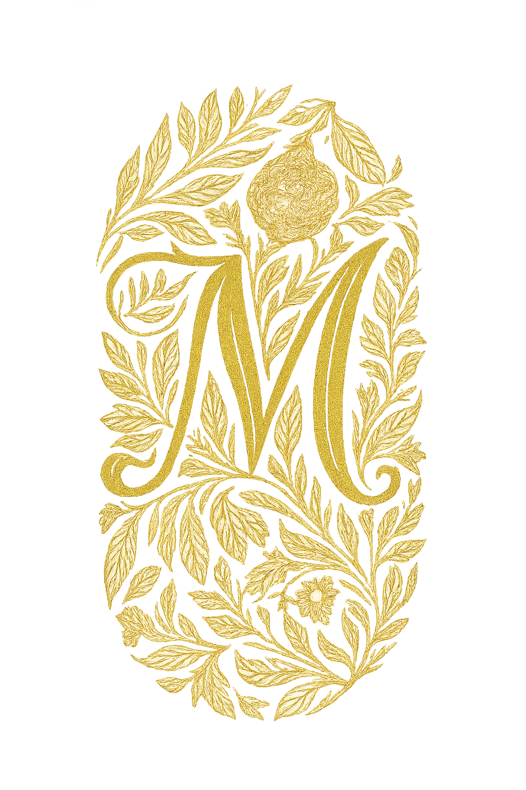

Margaux Création
Bienvenue sur mon portfolio digital ! Moi c'est Margaux, j'ai 21 ans et je suis passionnée par le design, l'innovation et la création d'expériences utilisateur mémorables. Découvrez mes projets et mes ambitions à travers ce site.


Bienvenue sur mon portfolio digital ! Moi c'est Margaux, j'ai 21 ans et je suis passionnée par le design, l'innovation et la création d'expériences utilisateur mémorables. Découvrez mes projets et mes ambitions à travers ce site.

Découvrez mes projets créatifs


Description détaillée du projet...
Madame, Monsieur, Actuellement en dernière année de Bachelor Marketing et Communication, je me permets de vous adresser ma candidature spontanée pour une alternance en Master au sein de votre équipe de communication et marketing, dès septembre 2026. Votre approche de la beauté, qui allie innovation coréenne et réponse aux besoins occidentaux, correspond exactement à ma vision du marketing : créer des solutions authentiques qui accompagnent réellement les clients. Cette philosophie résonne avec mon parcours, où j'ai appris à concilier créativité artistique et efficacité commerciale. Formée initialement à l'école Brassart en art graphique, j'ai choisi de me réorienter vers le marketing sans abandonner cette sensibilité créative qui guide mes réalisations professionnelles. Cette double compétence me permet d'aborder les projets de communication avec un regard différent. Actuellement chez Intérieurs Privés, je gère la communication digitale et développe des partenariats d'influence. Ma sélection comme finaliste au Prix Com'Handicap pour l'entreprise IKEA et mon engagement pour l'association Imagine For Margo illustrent ma capacité à mener des projets créatifs avec un réel impact. Mon intérêt grandissant pour l'UX/UI design s'inscrit naturellement dans cette démarche : comprendre que l'expérience d'une marque dépasse le produit pour englober toutes les interactions. En tant qu'utilisatrice de vos produits depuis plusieurs années, notamment votre CC crème, je mesure l'importance de cette cohérence entre promesse et expérience vécue. Intégrer votre équipe en alternance me permettrait d'allier ma formation, ma créativité et mon aspiration à contribuer à des projets qui transforment positivement la relation des consommateurs à la beauté. Je serais ravie de vous rencontrer pour vous présenter plus en détail mon parcours et mes motivations. Je vous prie d'agréer, Madame, Monsieur, l'expression de mes salutations distinguées. Margaux Isambert